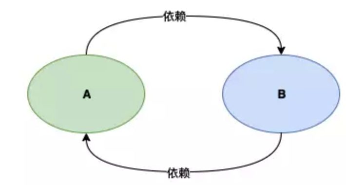
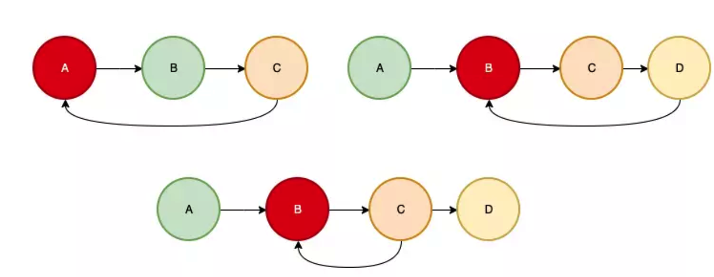
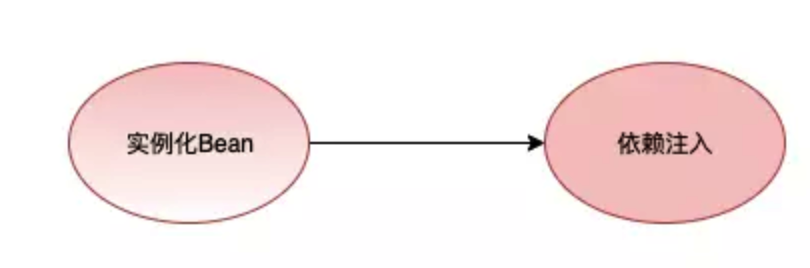
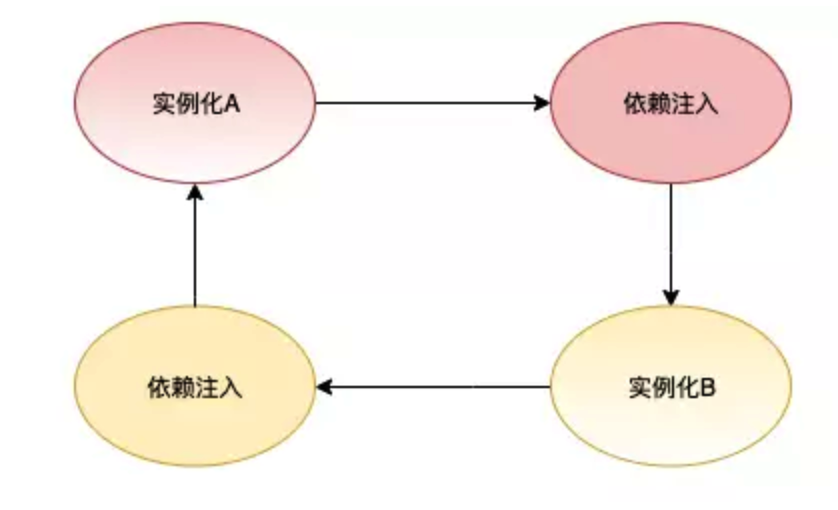
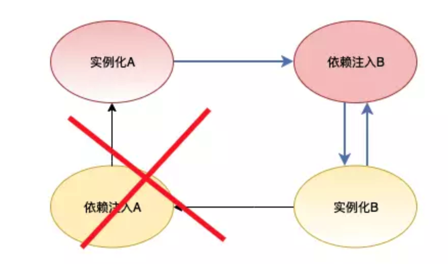
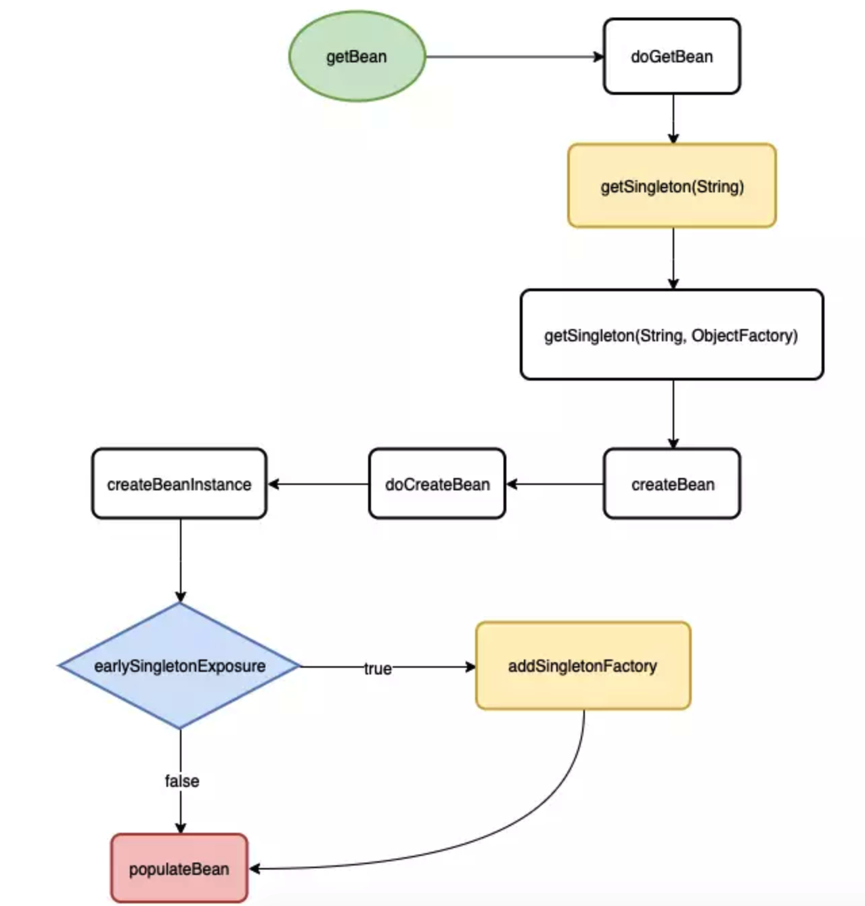
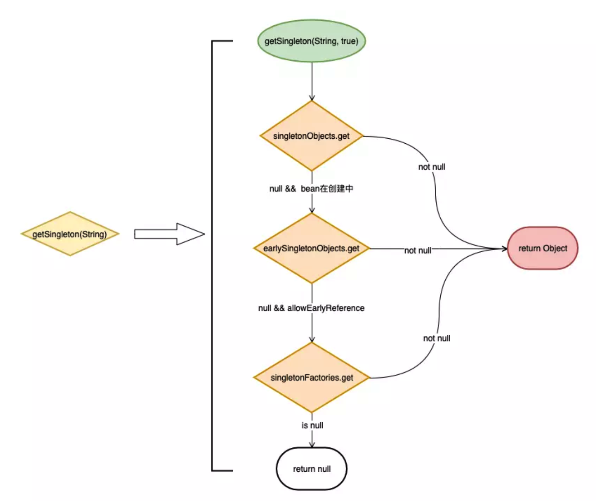
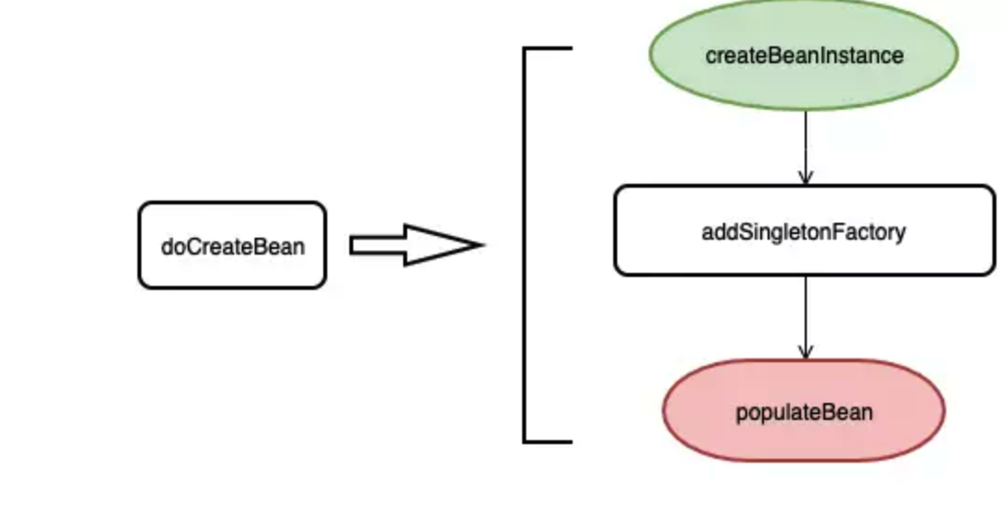
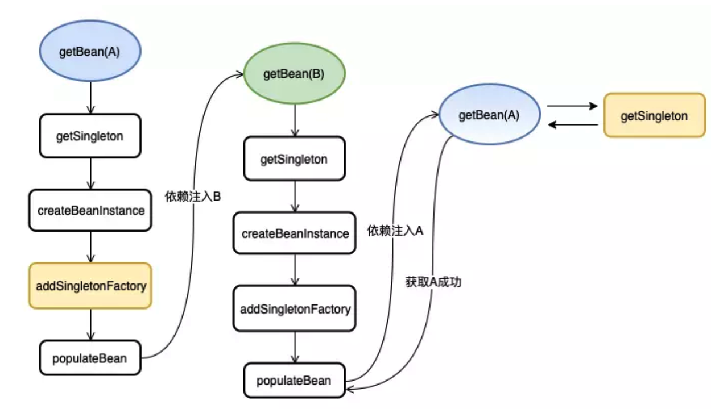

Spring如何解决循环引用
由于对象之间的依赖关系经常是错综复杂，使用不当会引发很多意想不到的问题， 一个很典型的问题就是循环依赖 （也可以称之为循环引用）。
Spring 为我们提供了依赖注入，并且在某些情景（单例 Bean 的注入）下支持循环依赖的注入
本文的主要目的是分析 Spring 在 Bean 的创建中是如何处理循环依赖的。
我会从循环依赖是什么，以及它的坏处，到最后通过Spring的源码来看它是如何处理这个问题的。
循环依赖不仅仅是 Spring 的 Bean 之间会产生， 往大了看，系统模块之间会产生循环依赖， 系统与系统之间也会产生循环依赖，这是一个典型的坏味道，我们应该尽量避免。
什么是循环依赖
循环依赖指的是多个对象之间的依赖关系形成一个闭环。
下图展示了两个对象 A 和 B 形成的一个循环依赖

现实中由于依赖层次深、关系复杂等因素， 导致循环依赖可能并不是那么一目了然。
为什么要避免循环依赖
循环依赖会为系统带来很多意想不到的问题
、循环依赖会导致内存溢出
参考下面的代码
1 | public class AService { |
当你通过 new AService() 创建一个对象时你会获得一个栈溢出的错误。
如果你了解 Java 的初始化顺序就应该知道为什么会出现这样的问题。
因为调用 new AService() 时会先去执行属性 bService 的初始化, 而 bService 的初始化又会去执行 AService 的初始化， 这样就形成了一个循环调用，最终导致调用栈内存溢出。
Spring的循环依赖示例
下面我们通过简单的示例来展示 Spring 中的循环依赖注入， 我分别展示了一个构造器注入和 Field 注入的循环依赖示例
构造器注入
1
2
3
4
5
6
7
8
9
10
public class AService {
private final BService bService;
public AService(BService bService) {
this.BService = bService
}
}1
2
3
4
5
6
7
8
9
10
11
public class BService {
private final AService aService;
public BService(AService aService) {
this.aService = aService;
}
}Field注入
1
2
3
4
5
6
7
public class AService {
private BService bService;
}1
2
3
4
5
6
7
public class BService {
private AService aService;
}Setter注入和 Feild注入 类似
如果你启动 Spring 容器的话， 构造器注入的方式会抛出异常 BeanCreationException ， 提示你出现了循环依赖。
但是 Field 注入的方式就会正常启动，并注入成功。
这说明 Spring 虽然能够处理循环依赖，但前提条件时你得按照它能够处理的方式去做才行。
比如 prototype 的 Bean 也不能处理循环依赖的注入，这点我们需要注意。
如何检测循环依赖
在一个循环依赖的场景中，我们可以确定以下约束
- 依赖关系是一个图的结构
- 依赖是有向的
- 循环依赖说明依赖关系产生了环
明确后，我们就能知道检测循环依赖本质就是在检测一个图中是否出现了环， 这是一个很简单的算法问题。
利用一个 HashSet 依次记录这个依赖关系方向中出现的元素， 当出现重复元素时就说明产生了环， 而且这个重复元素就是环的起点。
参考下图， 红色的节点就代表是循环出现的点

以第一个图为例，依赖方向为 A->B->C->A ，很容易检测到 A 就是环状点。
Spring是如何处理循环依赖的
Spring 能够处理 单例Bean 的循环依赖（Field注入方式)，本节我们就通过纸上谈兵的方式来看看它是如何做到的
首先，我们将 Spring 创建 Bean 的生命周期简化为两个步骤：实例化 -> 依赖注入， 如下图所示

实例化就相当于通过 new 创建了一个具体的对象， 而依赖注入就相当于为对象的属性进行赋值操作
我们再将这个过程扩展到两个相互依赖 Bean 的创建过程上去, 如下图所示

A 在执行依赖注入时需要实例化 B， 而 B 在执行依赖注入时又会实例化 A ，形成了一个很典型的依赖环。
产生环的节点就是 B 在执行依赖注入的阶段， 如果我们将其”砍”掉， 就没有环了， 如下图所示

这样做确实没有循环依赖了，但却带来了另一个问题，B 是没有经过依赖注入的， 也就是说 B 是不完整的， 这怎么办呢？
此时 A 已经创建完成并维护在 Spring 容器内，A 持有 B 的引用， 并且 Spring 维护着未进行依赖注入的 B 的引用
当 Spring 主动创建 B 时可以直接取得 B 的引用 （省去了实例化的过程）， 当执行依赖注入时， 也可以直接从容器内取得 A 的引用， 这样 B 就创建完成了
A 持有的未进行依赖注入的 B，和后面单独创建 B 流程里面是同一个引用对象， 当 B 执行完依赖注入后，A 持有的 B 也就是一个完整的 Bean了。
Spring源码
入口直接从 getBean(String) 方法开始， 以 populateBean 结束， 用于分析循环依赖的处理是足够的了

getBean(String) 是 AbstractBeanFactory 的方法, 它内部调用了 doGetBean 方法， 下面是源码：
1 | public abstract class AbstractBeanFactory extends FactoryBeanRegistrySupport implements ConfigurableBeanFactory { |
我简化了 doGetBean 的方法体，与流程图对应起来，使得我们可以轻松找到下面的调用流程
1 | doGetBean -> getSingleton(String) -> getSingleton(String, ObjectFactory) |
getSingleton 是 DefaultSingletonBeanRegistry 的重载方法
DefaultSingletonBeanRegistry 维护了三个 Map 用于缓存不同状态的 Bean, 稍后我们分析 getSingleton 时会用到
1 | /** 维护着所有创建完成的Bean */ |
getSingleton(String) 调用了重载方法 getSingleton(String, boolean)， 而该方法实际就是一个查询 Bean 的实现， 先看图再看代码：

从图中我们可以看见如下查询层次
1 | singletonObjects => earlySingletonObjects => singletonFactories |
再结合源码
1 | public class DefaultSingletonBeanRegistry extends SimpleAliasRegistry implements SingletonBeanRegistry { |
通过 getSingleton(String) 没有找到Bean的话就会继续往下调用 getSingleton(String, ObjectFactory) , 这也是个重载方法， 源码如下
1 | public Object getSingleton(String beanName, ObjectFactory<?> singletonFactory) { |
流程很清晰，就没必要再画图了，简单来说就是根据 beanName 找不到 Bean 的话就使用传入的 ObjectFactory 创建一个 Bean。
从最开始的代码片段我们可以知道这个 ObjectFactory 的 getObject 方法实际就是调用了 createBean 方法
1 | sharedInstance = getSingleton(beanName, new ObjectFactory<Object>() { |
createBean 是 AbstractAutowireCapableBeanFactory 实现的，内部调用了 doCreateBean 方法
doCreateBean 承担了 bean 的实例化，依赖注入等职责。
参考下图

createBeanInstance 负责实例化一个 Bean 对象。
addSingletonFactory 会将单例对象的引用通过 ObjectFactory 保存下来， 然后将该 ObjectFactory 缓存在 Map 中（该方法在依赖注入之前执行）。
populateBean 主要是执行依赖注入。
下面是源码， 基本与上面的流程图保持一致， 细节的地方我也标了注释了
1 | public abstract class AbstractAutowireCapableBeanFactory extends AbstractBeanFactory |
如果你仔细看了上面的代码片段，相信你已经找到 Spring 处理循环依赖的关键点了
我们以 A，B 循环依赖注入为例，画了一个完整的注入流程图

注意上图的黄色节点， 我们再来过一下这个流程
- 在创建 A 的时候，会将 实例化的A 通过
addSingleFactory（黄色节点）方法缓存, 然后执行依赖注入B。 - 注入会走创建流程， 最后B又会执行依赖注入A。
- 由于第一步已经缓存了 A 的引用， 再次创建 A 时可以通过
getSingleton方法得到这个 A 的提前引用（拿到最开始缓存的 objectFactory， 通过它取得对象引用）， 这样 B 的依赖注入就完成了。 - B 创建完成后， 代表 A 的依赖注入也完成了，那么 A 也创建成功了 （实际上 Spring 还有 initial 等步骤，不过与我们这次的讨论主题相关性不大）
这样整个依赖注入的流程就完成了
为什么构造函数构造bean会异常
为什么构造器构造bean会异常但是字段注入没事？
循环依赖问题只会在构造器中产生，spring会抛出UnsatisfiedDependencyException异常
因为构造器方式new一个bean的时候是必须依赖，而且是立即，缓一下都不行。不依赖这个bean new不出来了，那此时就会出问题。
但字段依赖时或者基于setter注入时并不影响该bean的实例化，后续去拿引用时(之前拿到的是提前引用，是不完整的bean)已经实例化好了